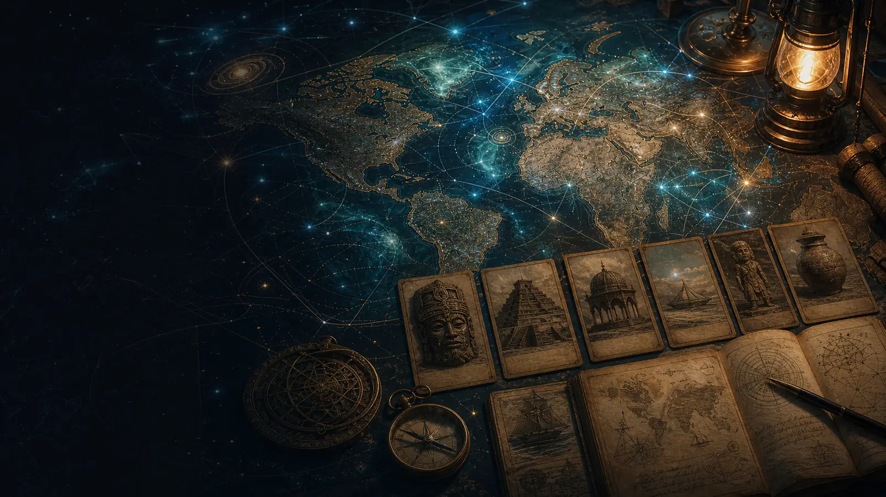
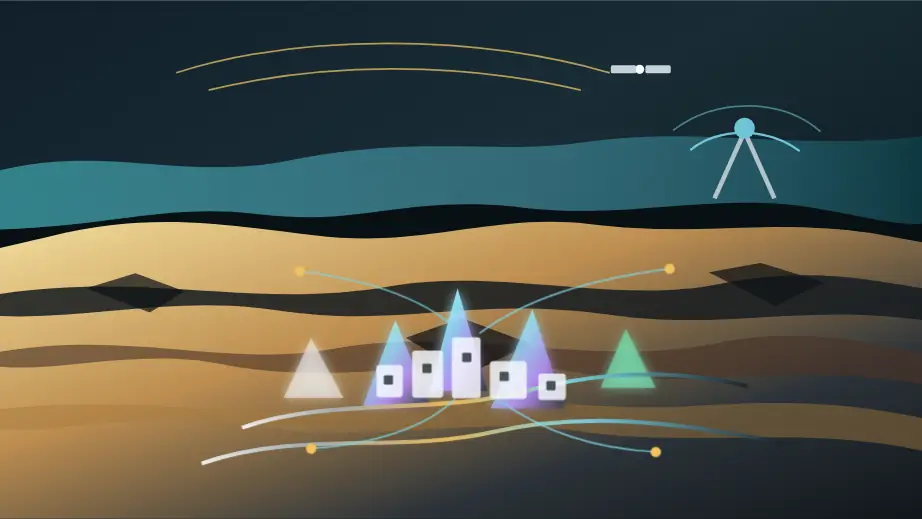

Cosmic Nexus
An in-development Strange But True adventure atlas for people who love old maps, odd artefacts, mythic trails and modern UAP questions, and want to help build the maps, trust layers and travel circles that could turn curiosity into real friendships around the world.
Field signal
Choose your own protopia.
Start with the soundtrack: a bright little transmission for mystery lovers, map makers, film crews and future travel circles who want wonder to become something people can actually build together.
Gateway
Six rooms for building the expedition.
Each page keeps one job clear: join the builder list, map the mysteries, design the governance, shape the films and festivals, connect the neighbouring repos, and keep the source boundaries honest.
01
Sign Up
Join the early builder list, choose your mystery lanes, name your boundaries, and tell us what kind of travel, research or friendship circle you want to help shape.
02Atlas
Help build the map for out-of-place objects, ancient records, mythic trails, star maps, modern UAP and alien disclosure questions, ocean trails and underground claims without mixing up story, source and speculation.
03Governance
Draft the rules of the expedition: consent, provenance, Extra Chair review, legal memory and future Sensorium ideas before the systems scale.
04Films
Turn the Alien Necklace, CYOA prompts, field quests and festival challenges into story formats people can play, critique and improve together.
05Connections
Follow the neighbouring projects that can become ingredients, not fake proof that one mega-system already exists.
06Sources
See the seed notes, live repo links and freshness state behind this first public framing.
Why it exists
Mystery should feel like a field trip, not a fog machine.
Cosmic Nexus is for the delicious moment when an old carving, a shipwreck rumour, a sky report, a museum cabinet or a strange family story makes everyone lean forward. The work is to keep that spark alive while building the boring-but-vital parts underneath: maps, dates, source trails, permission notes, travel routes, friendship circles and clear labels for what is known, guessed, fictional or still waiting for review.
Neighbouring repos
Nearby projects, not a finished machine.
These live repo-backed neighbours are ingredients for the future atlas: moonshot framing, civic simulation, peaceful space work and travel strategy. Cosmic Nexus is the table where they can be sorted into the right context.

Mineral Moonshots
The moonshot atlas has the early Cosmic Nexus and Abyss Protocol brief. This standalone site turns that spark into a clearer invitation to help map the mystery properly.
Open the brief
P4A Web3 Sensorium
The future governance layer to design carefully: local-first twins, open debate, public-interest data, provenance and human review.
Open SensoriumGAJRA Earth-Space-AI Summit
A nearby public forum for peaceful space, civic AI and community resilience. Useful context, not a claim that the Cosmic Nexus stack is already built.
Open summit